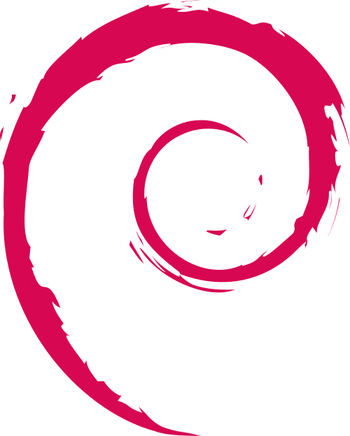
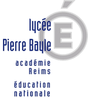
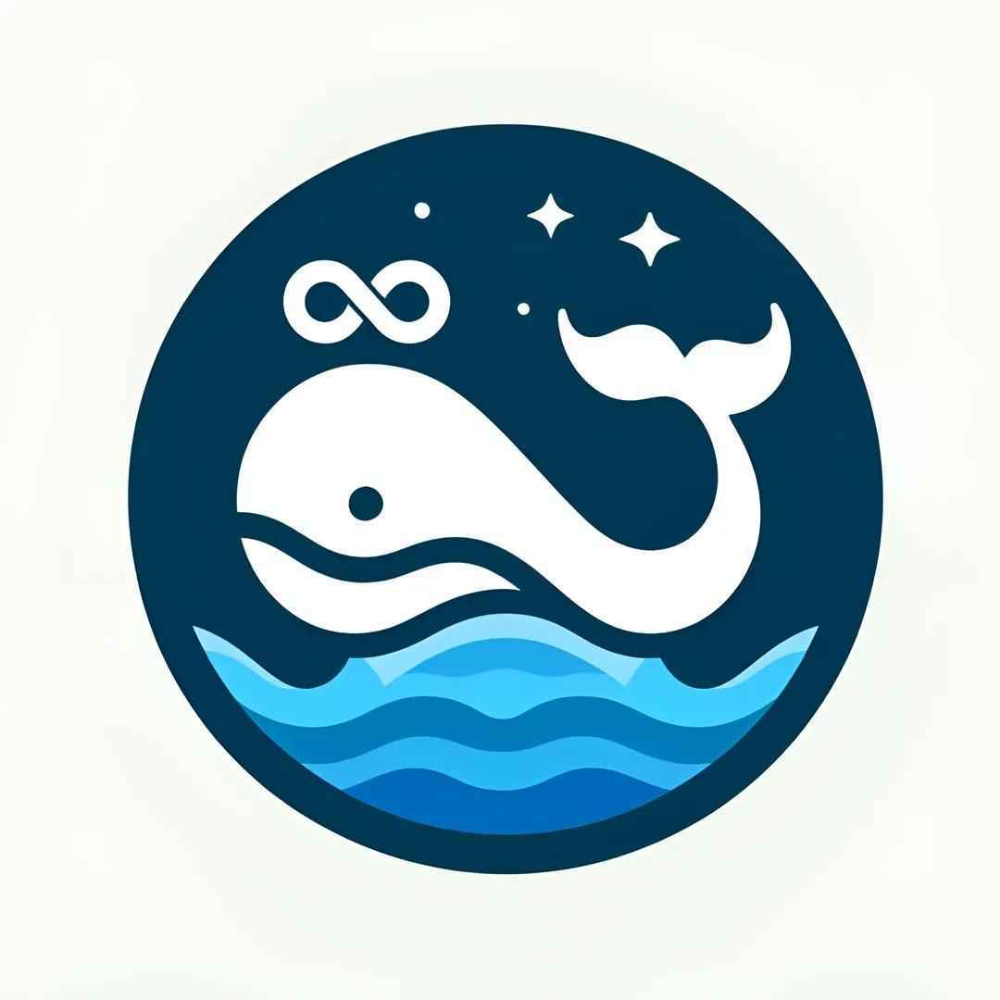

Systèmes d'exploitation utilisés

Étudiant en deuxième année de BUT Informatique, je me spécialise dans le développement d’applications avec une forte appétence pour la programmation et la création d’univers fictifs. Passionné par le game design, la conception logicielle et les nouvelles technologies, je cherche constamment à apprendre et à relever de nouveaux défis.


J'ai eu l'occasion de travailler en équipe sur de nombreux projets, tels que le jeu ludo-pédagogique *Infinite Dungeons* avec la méthode Agile.
Je suis tout autant capable d'improviser lorsque nécessaire. J'exerce ces compétences principalement dans mes jobs étudiants en animation, où je dois m'adapter à chaque situation.
J'ai obtenu mon baccalauréat au lycée Pierre Bayle à Sedan dans les Ardennes, avec les spécialités NSI (Numérique et Sciences Informatiques) et SES (Sciences Économiques et Sociales).
Je suis actuellement en 2ᵉ année de BUT Informatique à Villeneuve-d'Ascq, à l'IUT sur le campus de la Cité Scientifique. Je suis en parcours A : réalisation d'applications - conception, développement, validation.
Durant ma seconde année de BUT, j'ai fait partie du BDE informatique en tant que secrétaire. Nous avons organisé divers événements pour divertir les étudiants et leur proposer des activités facilitant la vie étudiante.
Je travaille comme animateur en centre d'accueil de mineurs pour la mairie de Sedan depuis trois ans pendant les grandes vacances, ce qui m'a permis de devenir vif, attentif et capable de m'adapter à tout type de public. Cela m'a aussi donné l'occasion d'établir des contacts humains enrichissants.
Dans le cadre de ma formation, j'ai l'opportunité de partir au Québec pour un stage dans l'entreprise Createch. Ma mission sera d'automatiser le fonctionnement d'un logiciel de design 3D à l'aide de VBA et Python.

Je suis un grand joueur de jeux vidéo tels que *League of Legends*, *Valorant*, *Marvel Rivals*, *Minecraft*, *Dofus*, *Hades 1 et 2*, ou *Apex Legends*. Je joue surtout pour discuter et passer du temps avec mes amis.
Dans mon temps libre, je consacre une partie à la création de jeux. Récemment, j'ai commencé à participer à des game jams, ce qui me permet de développer de manière moins formelle qu'en cours ou au travail, tout en m'amusant.
Je regarde quelques films et séries, principalement des productions connues comme *Umbrella Academy*, *WandaVision*, *Heartstopper*, *Loki*, ou encore le film *Dune*.